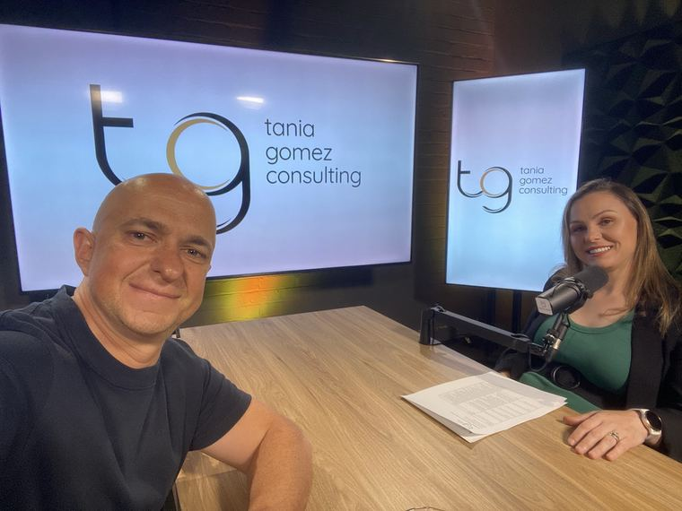
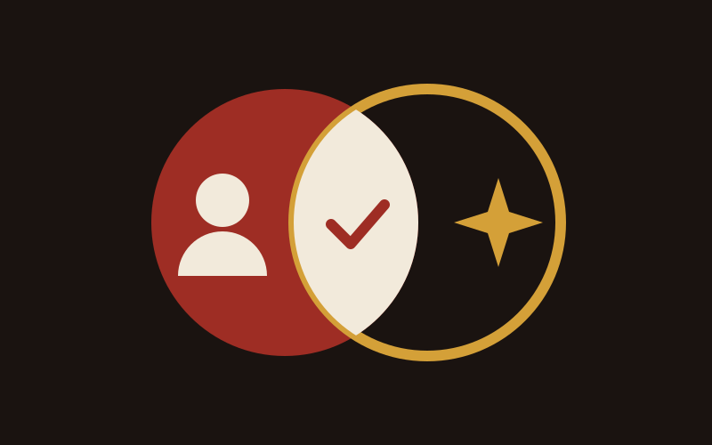

Virtual Assistant vs AI for NDIS Providers: Which First?
A task-by-task look at what a VA and AI each do well in an NDIS business, what they cost, how to protect participant data, and when you need both.
Read more
A virtual assistant (VA) helps an NDIS provider grow by taking repeatable admin off the owner: inbox, calendar, CRM updates, enquiry follow-up, rostering support and social scheduling. The growth comes from what you do with the hours you get back. A VA works well once someone senior gives them clear tasks, written process and regular review.

I first wrote this post in early 2024. I'm still a big fan of VAs, and I've updated it with what I've learned since, working with NDIS providers on their admin, marketing and intake.
When I came into the sector, I became "acutely aware" that a lot of NDIS businesses should be offshoring some, if not a lot, of their admin. The owners I meet are often doing jobs a VA could do, on top of running the business.
A VA can take on any task that repeats and can be written down. In an NDIS business that covers most of the back office.
| Task | Hand to a VA? | When |
|---|---|---|
| Inbox triage and calendar | Yes | First, from week one |
| Enquiry acknowledgement and follow-up | Yes, with a script | Once trained on your intake process |
| CRM and database updates | Yes | Early |
| Invoicing and reconciliation | Yes, with checks | Once trained on your systems |
| Rostering support | Yes, with checks | Once trained on your roster rules |
| Social scheduling and monthly email | Yes, with a senior person reviewing | Once your brand guidelines exist |
| Referrer follow-up and reporting | Yes, with a senior person reviewing | After 3 to 6 months |
When I'm working inside a provider's processes, the thought I keep having is: "So you're telling me this person's doing this job. I think that could be a VA."
Keep anything that needs judgement about a participant's safety or rights. That means incident decisions, complaints, risk assessments, and anything clinical.
Keep the final say on strategy and brand too. A VA can draft the monthly social plan. Someone senior decides what the business stands for and checks that every post says it.
A VA helps you grow when the hours they free up go into the work that brings in participants and referrers. For an NDIS owner, that usually means referrer relationships, faster responses to enquiries and a marketing plan that runs every month.
Intake speed is the easiest win. A family or support coordinator who enquires on Tuesday and hears back on Friday has had three days to call someone else. A trained VA can acknowledge every enquiry the same day and book the call for you.
Once someone else is qualifying the calls, you get "a lineup of good conversations that you're excited to have rather than three that were just a waste of your time."
The model I recommend to a lot of providers is a part-time marketing assistant: 10 to 15 hours a week on social, monthly email and keeping the CRM up to date, with me or another senior person making sure it's on brand and has a strategy behind it. If you want that run for you, that's what Managed Growth covers.
VAs execute hard once they have a list, a date and clarity. Without a senior person early on, the briefs are poor and the output comes back generic.
As I've put it on client calls: "They're forever waiting for something to do and if they get told what to do they will do it to the nth degree. And then some. But that thing to do may be very badly briefed or misguided."
One of these four setups has to be in place for a long stretch:
The signs that nobody senior is guiding the VA are easy to spot: generic messaging, and a call to action on every organic post. "You could build an army of doers, you still need someone who's sitting there going whoa whoa whoa."
I know the fear. Ten or fifteen years ago, when I first used offshore VAs, I was too scared to let anything go. Three months later I was like, wow. Everything's trainable.
Here is the order I use:
On step 3: in a workshop with a client's team, the team said training new assistants was taking up their whole week. I recorded a 26-second Loom on the spot, hit "generate SOP" and a full procedure came out.
On step 5: at one business I work with, two assistants were each paying about US$20 to 25 a month out of their own pockets for the AI tools they needed to do the job, and skipping months when money was tight. The business moved them onto one company plan, paid for by the business.
Offshore VAs cost less per hour and suit back-office work, scheduling and marketing support. Onshore VAs suit roles with a lot of phone contact with participants and families, or roles that need local knowledge. As a guide, a strong offshore candidate starts from around $1,500 AUD a month part-time. Full-time starts from at least $2,000 AUD a month, and that is for entry-level data entry and admin.
A manager at one provider worried an assistant couldn't handle first calls with empathy. My answer was to build up to it: script it, train it, and start with acknowledgement calls.
When a provider needs a VA hired, I work with our offshore staffing partner on the hire and set up the tasks the VA will run.
I use offshore talent in my own business too.
Treat a VA like any other worker who handles participant information. The Privacy Act covers your business whatever its size: the OAIC (opens in a new tab) says it applies to any health service provider "regardless of turnover".
In practice that means:
You know it's working when the owner's week changes. Track three things from the start:
Then watch for my three milestones: task ownership, brand ownership (around 3 to 6 months), and initiative. When I onboarded a client's offshore coordinator, I laid out her roles, channels, tools, guidelines and a weekly cadence with deadlines and the reason behind each one. Within weeks she was emailing me weekly updates without being asked.
I like a combination of both, chosen task by task. A VA with AI tools that know your business produces far better work than a VA using a free chatbot. I've laid out which tasks suit each in Virtual assistant vs AI for NDIS providers.
If you're the bottleneck in your own business, founder issues that hold back growth covers the rest of the picture.
Freeing up the owner's week often comes before any marketing, and it is where many of my conversations as an NDIS marketing agency start.
It depends on hours, location, and whether you hire direct or through an agency. Offshore VAs cost less per hour than onshore ones. Start with a fixed number of hours a week on a defined set of tasks, then add hours once the first tasks run without you. As a guide, a strong offshore candidate starts from around $1,500 AUD a month part-time, and full-time starts from at least $2,000 AUD a month for entry-level data entry and admin.
Yes, once trained on your systems and with a check in place. A VA can prepare claims, reconcile payments and chase rejected claims. Keep approval with someone senior in your business, at least until the VA has run the process accurately for a few months, and give them the access the task needs and nothing more.
It depends on the role. The NDIS Commission says registered providers must screen workers in risk-assessed roles, which include key personnel and roles likely to have "more than incidental contact" with people with disability, such as building rapport as an ordinary part of the job. A VA who regularly calls participants may fall inside that. Decide it role by role and keep a record.
Start part time. For a marketing assistant handling social, monthly email and the CRM, 10 to 15 hours a week is a good starting point. For admin, begin with inbox and calendar, measure the hours the owner gets back, and add tasks and hours as each one runs without you.
An agency handles recruitment, payroll and replacement if the VA leaves. Hiring direct gives you more control and can cost less, but you carry the recruitment and the management. Either way, the VA needs someone senior beside them for the first months. Without that, the output comes back generic.

A task-by-task look at what a VA and AI each do well in an NDIS business, what they cost, how to protect participant data, and when you need both.
Read more
Signs the owner has become the bottleneck in an NDIS business, which jobs to hand over first, and how to step back without losing referrers.
Read more
How to grow an NDIS business across six areas: referrers, intake, participant and staff retention, capacity and owner time, with a number for each.
Read more
In a free growth audit I look at your admin, intake and marketing, and show you which tasks to hand over first.